Art trials
Trial art next to what the game uses today. Pick what reads best; nothing on this page is installed until you choose.
Own art for five more groups (batch 131, ComfyUI with the trained style), installed in u267 and u268
The better of two versions of each sheet. Old on the left, new on the right; close-up of the new one beside it. Left out: the Akimichi slam (a body drawn, text in the other) and the ANBU current redo (a person drawn).
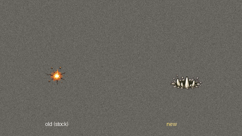
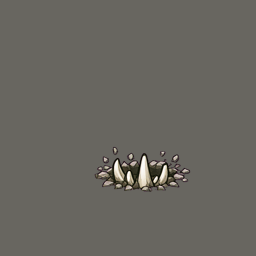
A CLUSTER OF CURVED BONE SPURS CRACKING UP THROUGH THE FLOOR, stone chips flying off their tips. Bone is ivory white with pale grey shading and a dark brown-grey outline.
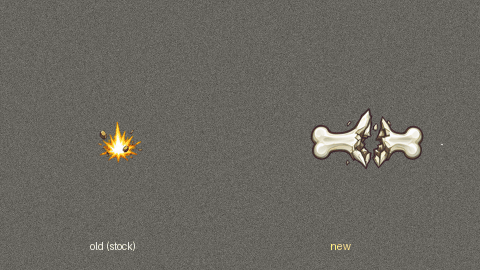
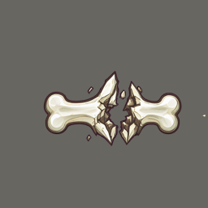
A BONE SNAPPING AND SPLINTERING: sharp bone splinters and chips thrown out to the right with a puff of pale dust. Bone is ivory white
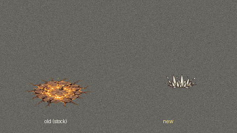
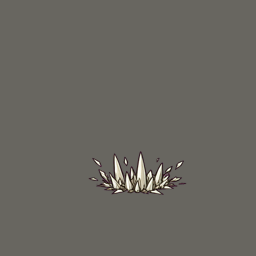
A FOREST OF BONE SPIKES STABBING UP: many thin pointed bone spikes of different heights shooting up out of the ground. Bone is ivory white with pale grey shading and a dark brown-grey outline.
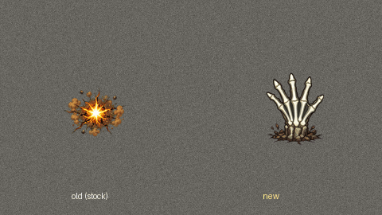
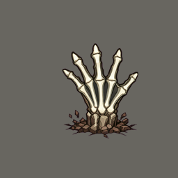
SKELETAL BONE HANDS BURSTING UP OUT OF THE GROUND AND CLENCHING SHUT, cracked stone around their wrists. Bone is ivory white with pale grey shading and a dark brown-grey outline.
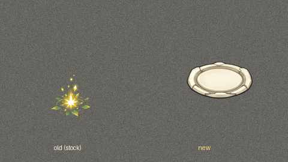
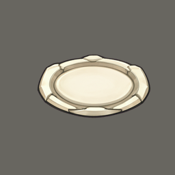
BONE ARMOUR PLATES SURFACING AND LOCKING TOGETHER over a body shape (the body not drawn), curved overlapping ivory plates. Bone is ivory white with pale grey shading and a dark brown-grey outline.
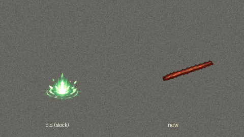
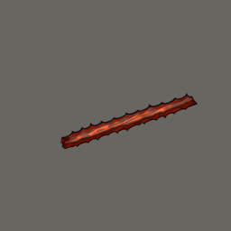
A WOUND STITCHING ITSELF SHUT: a short glowing red cut line with bright white thread stitches pulling it closed, a soft heartbeat glow.
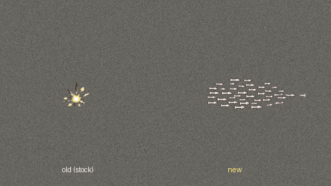
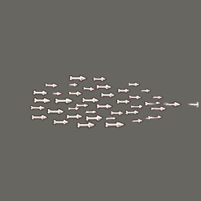
FINGERTIP BONE BULLETS FIRED IN TURN: small pointed bone bullets flying to the right in a staggered line, short speed streaks behind e
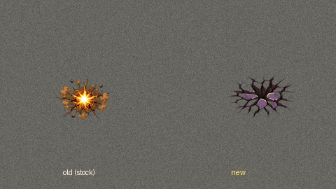
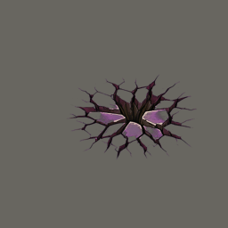
THE GROUND CAVING IN UNDER A GIANT'S WEIGHT: radiating cracks and tilted stone slabs pushed up at the rim, dust rising.
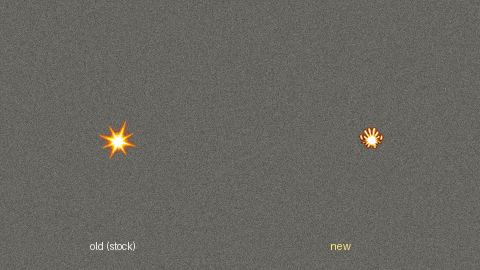
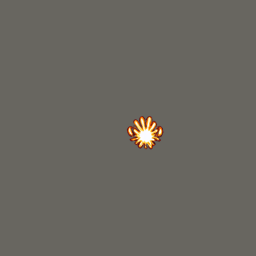
THE FLASH OF A GIANT PALM HITTING: a big flat white-orange impact flash with thick short rays, flattened like a hand print.
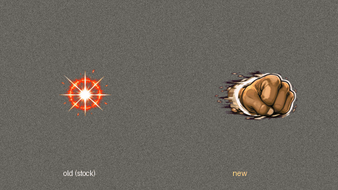
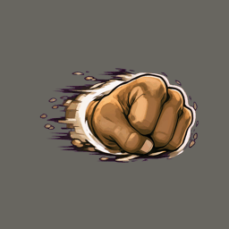
A GIANT FIST'S SHOCKWAVE: a thick crescent of pushed air and dust rolling to the right from a huge punch, heavy speed lines.
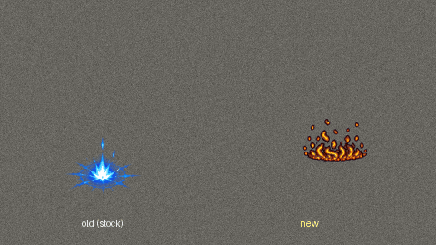
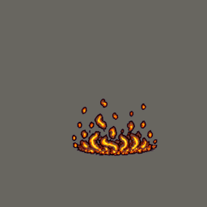
CALORIES BURNING INTO CHAKRA: orange-red embers rising off a body (the body not drawn) and turning into blue chakra sparks as they climb.
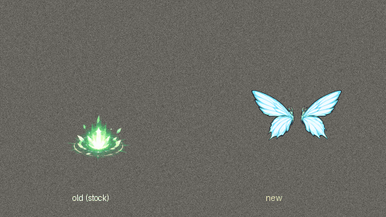
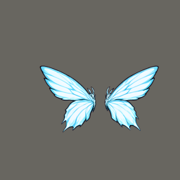
BUTTERFLY WINGS OF LIGHT UNFOLDING BEHIND A BODY (the body not drawn): two pairs of bright pale blue-white wings spreading out to both sides. Close to the anime on purpose (your call).
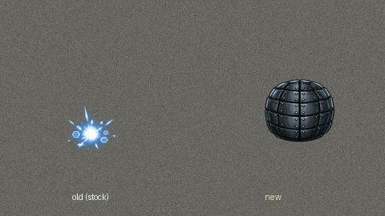
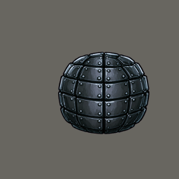
AN IRON LAYER CLOSING ROUND A GUT: dull dark grey iron plates riveted together sliding shut round a round body shape (the body not drawn).
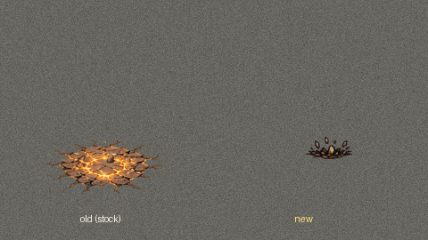
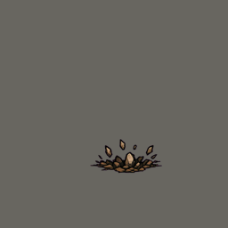
HEAVY STOMP SLABS: thick blunt slabs of rock pushed up out of the ground by a heavy step.
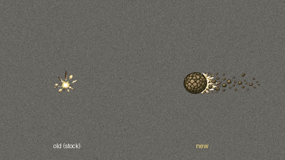
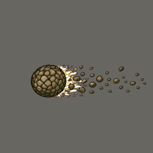
A ROLLING GIANT BALL THROWING ROCK CHIPS: chunky rock chips and dust kicked up in a trail, the trail running to the right.
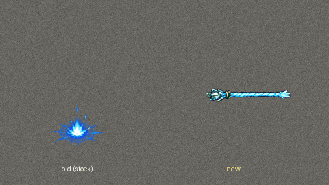
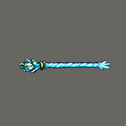
A CHAKRA ROPE LASHING OUT AND COILING TIGHT: a pale blue chakra rope whipping out to the right and wrapping round a point.
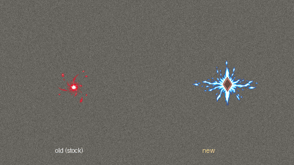
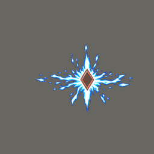
CHAKRA PULLED OUT INTO A RED DIAMOND SEAL: thin pale blue streams torn out of a point and sucked into a small red diamond seal mark.
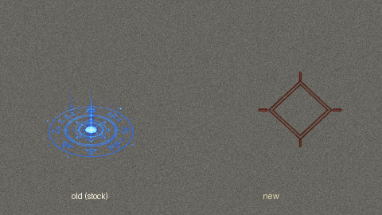
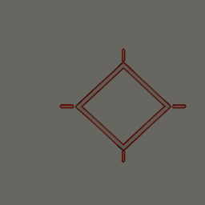
A RED DIAMOND SEAL CLAMPING SHUT on the ground: a deep red diamond outline traced and snapping closed, short straight lines at its points. No writing, no glyphs, no symbols.
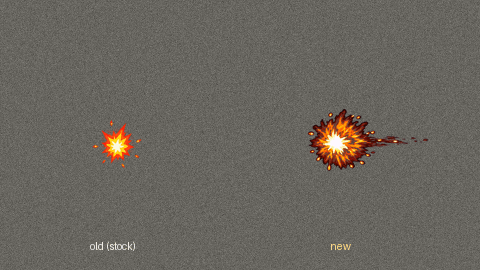
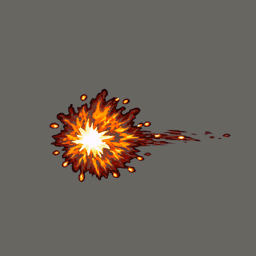
A CRIMSON FIREBALL BURSTING ON IMPACT: deep crimson and orange fire thrown forward to the right from the hit, a hot white core at the
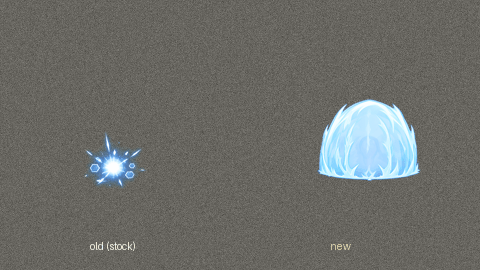
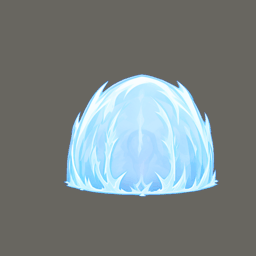
A STILL PRESERVING SHELL CLOSING: a smooth low dome of pale cold blue-white chakra with faint frost lines, translucent so a body inside would show.
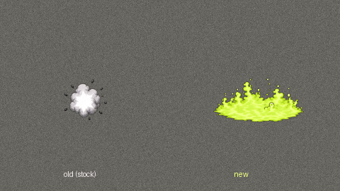
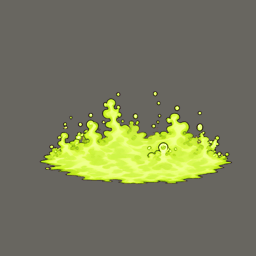
A FIZZING DISSOLVING MIST creeping low over the ground: sickly yellow-green mist with small fizzing bubbles, uneven spreading edges.
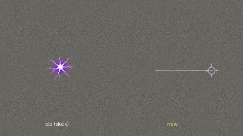
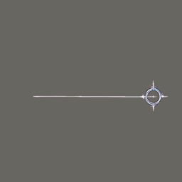
A GUIDE THREAD LOCKING ONTO A TARGET: a thin bright white thread line shooting to the right and ending in a small aiming ring that sna
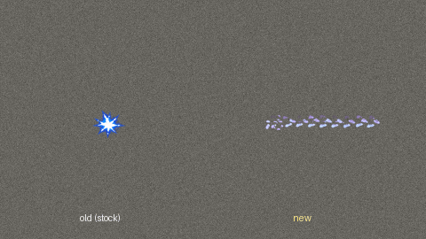
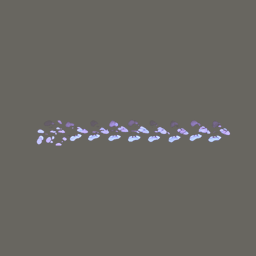
OLD TRACKS LIGHTING UP: a trail of faint glowing pale blue footprints leading to the right.
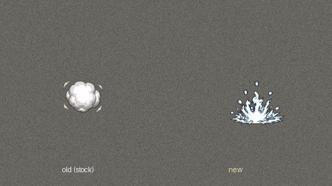
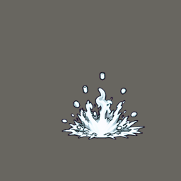
A SMOKE ESCAPE POP at the feet: a quick dense puff of slate-grey smoke billowing up, curling edges.
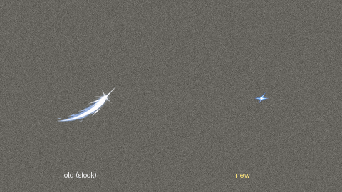
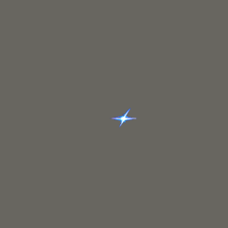
ONE CLEAN TANTO CUT: a single very thin straight bright white line across the cell from left to right, a faint pale blue edge.
A DRAW-CUT: a sharp thin crescent arc of bright steel-white light sweeping to the right, a few small pink petals torn off in its wake.
A VIOLET LINE WRAPPED IN CRACKLE: a straight cut line from left to right with violet-white electric crackle and small jagged sparks al
A SPIRAL CUT CATCHING FIRE: a spiral of thin bright cut-lines bursting into orange and yellow fire along its length.
A VIOLET LIGHTNING SLASH STRIKING: a straight cut from left to right with a violet-white lightning burst along it, thin jagged arcs.
A CUT OPENING BEHIND A PASSING SHADOW: a dark smoky streak moving to the right with a thin bright white cut line opening along its tra
A TWISTER OF CHERRY PETALS RISING: pink petals and thin white cut streaks twisting upward in a narrow column.
A CIRCLE CUT AROUND A FOE: one fast stroke of bright white blade light running round a point and closing, petals scattering off it.
ONE BRIGHT BATTOJUTSU LINE: a single long straight razor-thin line of white light from left to right with a soft blue glow.
A SUMMONED BEAST'S CHAKRA RISING: a tall flare of rainbow-tinted chakra light rising from a point, small sparks around it.
A THUNDER DRAGON'S STRIKE: a big white-blue lightning starburst with thick jagged arcs and a bright white centre.
BEETLES CARRYING POISON OUT OF A BODY (the body not drawn): small dark beetles crawling out and flying away in all directions, each carrying a tiny purple drop. Redo of the batch 130 piece.
A STORM OF HEAVY BLOWS: several separate white-gold impact flashes of different sizes landing at different spots round a target, uneven and staggered, not a ring. Redo of the batch 130 piece.
SHADOW TENDRILS WRAPPING A BODY (the body not drawn): flat black shadow tendrils climbing up from the ground and coiling tight round a standing shape, pointed tips, thin dark purple rim. Redo of the batch 130 piece.
A SHADOW HAND SQUEEZING: a big black shadow hand rising from the ground, closing its fingers into a fist, a short dark purple shock where it tightens. The hand shape must be clear: palm, five fingers. Redo of the batch 130 piece.
DARK MEMORIES PULLED OUT AND DISSOLVING: wisps of dark grey-violet smoke drawn upward out of a point at head height, breaking into fine pale motes. Redo of the batch 130 piece.
Own art for four more groups (batch 130, made with ComfyUI and the trained style)
The better of two versions of each sheet, made free on your PC. Old on the left, new on the right; close-up of the new one beside it. Not in the game until you say so.
INSECTS DRAWING POISON OUT OF A BODY: a soft round green glow with a ring of small dark beetles circling it, carrying away tiny purple droplets of poison outward. Dark green-black beetles, soft green glow, small purple d
A STAR'S LIGHT GATHERING: a tall narrow flare of pale gold and white starlight rising from a small point, four-pointed star glints around it.
A FALLING STAR STRIKING THE GROUND: a hot white core with gold and orange fire thrown outward in a starburst, small star-shaped sparks flying off. Gold, orange and white.
THE FLASH OF A STAR'S IMPACT: a sharp eight-pointed white-gold star flash with thin rays, a pale gold ring around it. White and gold only.
A DARK MOON TEARING THE GROUND: a burst of deep indigo and black crescent shards thrown outward from a pale silver crescent moon shape in the middle, cracks in the ground under it.
A STORM OF HEAVY BLOWS LANDING: a ring of several overlapping white-gold impact stars with short speed lines, as if many punches hit at once.
LIVING SHADOW BURSTING OUT: a burst of flat black ink-like shadow tendrils shooting outward from a point on the ground, sharp pointed ends, a thin dark purple rim light on their edges.
A STREAM OF SHADOW RACING ALONG THE GROUND TO THE RIGHT: a flat black ribbon of living shadow, narrow at the left and widening to the right, its front end splitting into grasping fingers. Black with a thin dark purple ri
SHADOW TENDRILS COILING ROUND A PERSON: thin flat black shadow tendrils spiralling round an empty centre, their tips pointed, a thin dark purple rim light.
A SHADOW HAND SQUEEZING: a black shadow hand closing into a fist with a short dark purple shock ring where it tightens.
SHADOW THREADS STABBING: many thin black shadow needles fanning out from one point to the RIGHT, sharp tips, a faint purple rim.
A DOME OF SHADOW: a smooth low dome of dark translucent black-violet shade over an empty centre, a few shadow tendrils crawling up its sides, darker at the base. Not blue, no hexagons.
A MIND HELD STILL: a ring of thin pale silver-grey threads looping round an empty centre with a few small focus-ring marks, cold and precise. Light colours (white, pale grey and pale gold) so the game can tint it.
FOCUS RINGS CLOSING ON A MIND: thin sharp concentric rings of pale silver light spreading out, a few short tick marks on them like a dial, an empty centre. Light colours (white, pale grey and pale gold) so the game can t
DARK MEMORIES PULLED OUT AND DISSOLVING: small wisps of dark grey-violet smoke drawn out of a point and breaking into fine pale motes. Light colours (white, pale grey and pale gold) so the game can tint it.
CURRENT CRAWLING OVER A BODY: small jagged white-blue electric sparks crawling in a loose ring, short bright arcs jumping between them.
ONE CRACKLING STUN HIT: a sharp white-blue lightning starburst from a palm strike, thin jagged arcs thrown outward, a bright white centre.
A VIOLENT SOUND WAVE: several sharp curved wave fronts of pale air spreading out to the RIGHT in a cone, short vibration lines along them. Light colours (white, pale grey and pale gold) so the game can tint it.
Chakra bar in the dark slate look (design mockups)
The chakra box under a selected ninja, in the slate look of tab option A: normal, a technique being aimed (the part it would spend striped) and low chakra. Mockups only; today the bar is the paper scroll (u242).


A dark groove with steel diamond end caps; chakra as a bright blue bar, red when low.


The same box, keeping today's indigo ink stroke (round end) instead of a bright bar.
Pawn tab buttons in the NFRP look (design mockups)
The tab row under a selected pawn. Shinobi is shown selected and Log hovered. The wooden look today comes from the PrettyUI mod. Mockups only, nothing is in the game.
For comparison.
Dark slate tabs with the thin steel-grey inset line and diamond of the tree backgrounds; the selected tab brightens.
Scroll paper between short wooden rods; the selected tab gets an indigo ink stroke and a vermilion seal.
Dark slate tabs with cut corners; the selected tab turns to scroll paper with an ink stroke and a vermilion seal mark.
Own art for four hand-made groups (batch 125 pilot)
Each technique group gets its own version of the stock effects it used: old on the left, new on the right (close-up of the new one beside it). Not in the game until you say so.


Heat of a kick bursting where the heel lands. Note: it came out round, close to the old design, not the lopsided burst asked for.


The fire arc a sweeping leg leaves.


Heat climbing the leg.


A spinning wheel of fiery kicks.


Threads and petals wheeling round the head (light art, tinted in game).


Thread ripples spreading out.


A glowing thought cracking apart (Broken Mind).


A binding circle woven from thread.


A calm pulse of the mind (Mind Pulse).


A sea splash with fin-tipped spray.


Shark-skin scale shell in place of the hexagon shield (Shark Skin).


A heavy charge of deep water landing (Depth Charge, Killing Depths).


Jaws of water snapping shut.


A circling current with two fins (Shark Wall, Shark Frenzy).


A swarm made only of beetles, no grey smoke.


A beetle mass slamming down and scattering.


Beetles boiling out of cracks round the feet.


The same brief: GPT (paid, installed), Gemini (free) and FLUX 3 Image Klein in ComfyUI on your PC (free, 17 s); the close-up is ComfyUI's. All three drew a round burst.
Great Fireball: still core, travel dart, impact flash (batch 124)
After the pixel-art reference video: the round body stays identical in every frame and only the flames and embers move; a small stretched dart for the flight; a short hard flash at contact before the dome of fire. Each option flies across the stone floor at game speed (left) and loops in close-up (right). Nothing here is in the game yet.


What the game draws now. The swirl inside the ball is redrawn every frame.


Same art, no new batch: frame 1's round body is copied into the other three, so only the flames move.


Batch 124: twice the frames, flames curl and embers peel away; the painter kept the core almost the same.


B with the core made exactly identical in all eight frames.


C for the first moment, then the small white-hot dart carries it, then the star flash and today's dome of fire.


Flame gathers in at the mouth while the ball swells, C's full fireball for the whole flight with today's swirling orange fire set inside its bright centre, D's star flash at contact, then the dome of fire.